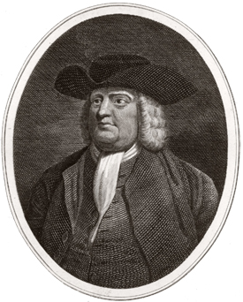
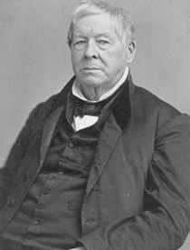

|
The history of slavery in Delaware is conditioned by two important factors.
First, it was a border state, the inhabitants of which in the two southern
counties, Kent and Sussex, had close ties with their neighbors on Maryland's
Eastern Shore, while in the northern county of New Castle the influence of
nearby Pennsylvania and Philadelphia was strong. Second, the state never
developed a crop such as tobacco or cotton involving the use of large numbers of
slaves throughout the year.
During its early history the colony on the Delaware River changed hands
several times. The Swedes established the first permanent settlement at Fort
Christina (Wilmington), but lost control to the Dutch in 1655. The English
defeated the Dutch in 1664. The new owner was the Duke of York, brother of King
Charles II, but in 1682 he surrendered control to William Penn, in order that
the access route up the Delaware River to Pennsylvania would be safer.
At no time before Penn acquired the colony was the black population numerous.
The first black inhabitant was named Anthony, who came to New Sweden on a
Swedish ship from the West Indies in 1639. It is uncertain whether he was then
slave or free, but in later life he became free. In 1664 one-fourth of 300
slaves arriving at New Amsterdam were assigned to New Amstel (New Castle) on the
Delaware River, but most of them ended up in English hands as part of the spoils
of war and were sold in Virginia. A census of 1677 revealed only eight slaves of
each sex living under the jurisdiction of the New Castle Court.
|

William Penn
|
Under William Penn the area in the colony south of New Castle became more
thickly settled, and Kent and Sussex counties were developed. Demand for labor
increased greatly. When indentured servants from Europe proved insufficient in
number to supply the need for labor, the settlers turned to slaves. Many
settlers who came from Maryland's Eastern Shore brought slaves with them. Other
slaves were imported from overseas. Figures from reports of ministers of the
Church of England indicate that slaves and free blacks were numerous in the
Three Lower Counties by 1728. The number of slaves and free blacks in Sussex
County in that year totaled 241, and, by some accounts, comprised one-third of
the total population in southern New Castle County. About twenty-five years
later they numbered 364 in the parish of Appoquinimink in southern New Castle
County and were "very numerous" in Kent County, the Church of England minister
there having baptized 100 black adults and 17 children. On the basis of these
figures, perhaps a minimum of 1,000 free blacks and slaves lived in the Lower
Counties by 1750. At least 2,000 blacks lived in the colony in 1775, and
according to the federal census of 179O, the total was 8,887 slaves and 3,899
free blacks.
Most of the slaves and free blacks in the Lower Counties worked as farm
laborers or domestic servants. Inventories of deceased persons from the colonial
period indicate that most families owned no slaves, some owned one or two or a
family, and a small number owned ten or more slaves. For example, when Nicholas
Loockerman, a wealthy farmer of Dutch descent, died in Kent County in 177O, he
owned twelve slaves. A friend who died in the same year, John Vining of Dover,
owned seventeen slaves.
A few slaves were trained for other jobs than farming or domestic service. In
1764 John Dickinson advertised for rent his Kent County plantation. He mentioned
that the renter might also secure the services of slaves trained as tanners,
shoemakers, carpenters, and tailors as well as for farm work, provided that they
would be treated kindly. Advertisements for runaways occasionally point out that
the missing slave could play the violin or read and write.
By 1700 the increasing number of slaves attracted the attention of the
assembly representing both the Lower Counties and three Pennsylvania counties.
An act passed in that year setting up special courts "for the trial of Negroes"
marked the beginning of discriminatory legislation against blacks in Delaware.
During the colonial period other laws provided for more severe penalties for
blacks than for white persons and prohibited them from carrying weapons and
assembling in large numbers. Especially severe was the punishment of sexual
relations between white females and black males, occasional examples of which
are presented in county records. Both were placed in the pillory and whipped,
but the ear of the black male offender was nailed to the pillory and cropped
off. Intermarriage of black and white persons was forbidden. Laws in the 1760s
permitted owners to free slaves, provided that a bond had been posted, as free
blacks were suspected of being "slothful" and an evil example to slaves.
Lawmakers also feared that free blacks might become dependent for relief upon
counties.
The Anglican church expressed interest in the spiritual welfare of the black
inhabitants, both free and slave. Upon orders from the Society for the
Propagation of the Gospel in London, Anglican missionaries in the Lower Counties
in the eighteenth century held special services for blacks and performed
baptisms with mixed results. In 1748, for example, the Reverend Philip Reading
of Appoquinimy in New Castle County reported that converting blacks to
Christianity was not easy, partly because their African religions assured them
that at death they would return to their native country. The Reverend Hugh Neill
of Dover in Kent County, however, had considerable success in attracting
attendance at services on Sunday evening. In 1752, within six months, he had
baptized thirty-six black adults, each of whom could recite the creed, Lord's
Prayer, the Ten Commandments, and part of the catechism, though few could read.
A special study of the Anglican church in colonial Delaware estimates that 500
black persons received instruction and were baptized.
The number of slaves in Delaware was rapidly growing, and the assembly on the
eve of the American Revolution tried to exercise some control. In 1775 the
assembly passed a bill to prohibit both the importation and exportation of
slaves, but Governor John Penn vetoed the proposal. When the first constitution
was drawn up for the state in 1776, one provision provided that "no person
hereafter imported into this state from Africa ought to be held in slavery under
any presence whatever, and no Negro, Indian or mulatto slave ought to be brought
into this state for slavery from any part of the world." But upon application to
the legislature farmers who owned land along the Maryland-Delaware border could
receive permission to transport slaves into and out of the state to work on
their land. Court records reveal that slaves continued to be sold out of the
state and that sometimes freedmen were kidnapped for this purpose.
During the American Revolution the black inhabitants of the state made
important contributions to American victory as toilers of the soil and in
general service. Slaves and free blacks sometimes served as express riders,
hostlers, and teamsters. Free blacks, like their white neighbors, paid taxes,
sometimes in grain, for the support of the common cause. The labor of slaves and
free blacks on Delaware plantations produced provisions for the American army.
State laws forbade the recruiting of black soldiers; consequently, few blacks
likely served as soldiers.
At the time of the American Revolution Quakers in the state, inspired by the
example and teachings of Warner Mifflin of Kent County, began to free their
slaves. He submitted petitions urging abolition to the general assembly and
later to Congress. Perhaps his example influenced John Dickinson in 1777 to
manumit twenty-two of his slaves in Kent County. The Methodists, who began to
grow rapidly after the Revolution, also urged their members to free their
slaves. Although a large number of slaves were manumitted during and after the
Revolution, the census of 1790 revealed that there were still three slaves for
every free black in the state.
Influenced perhaps by the example in nearby Pennsylvania, some Delawareans,
mostly Quakers, established in 1788 the Delaware Society for Promoting the
Abolition of Slavery. In the same year the Delaware Society for the Gradual
Abolition of Slavery also began meeting. These were the first of several
"gradualist antislavery" societies that were organized in the state. The members
protected free blacks from kidnapping and encouraged slave owners to free their
slaves. In 1823 a branch of the American Colonization Society was formed in
Wilmington to sponsor sending free blacks to Africa, but the free blacks in the
city held a public meeting of protest. The Wilmington society gathered money for
the support of Liberia and continued to be active for at least twenty-five
years.
|

Delaware abolitionist Thomas Garrett
|
Some Delawareans were bitterly opposed to slavery. The most prominent leader
was Thomas Garrett, a Wilmington businessman and Quaker, who claimed that by
1858 he had aided the escape of 2,152 slaves. Free blacks were also conductors
on the underground railroad. Abraham D. Shadd, a Wilmington shoemaker, was
active in this capacity and was also a community leader. Samuel Burris of Kent
County served as a conductor. Jailed upon one occasion, he had his services sold
from the courthouse steps and found that his friends had bought his time. One of
the most prominent black conductors in the nation, Harriet Tubman, sometimes led
runaways to freedom through Delaware from the Eastern Shore of Maryland.
The number of slaves in Delaware decreased rapidly, from almost 9,000 in 1790
to half that number in 1820 and to 1,798 in 186O, most of the latter number
being confined to Sussex County. The work of Quakers and Methodists, the
activities of abolitionist societies, running away, and the example of nearby
northern states contributed to the decrease in the number of slaves. So too did
the exhaustion of the soil and the year-round cost of keeping slaves. Also the
industrialization of the Wilmington-Brandywine area made slavery unattractive in
northern Delaware. By 1860 slavery was almost extinct in Wilmington and rapidly
disappearing in New Castle County. Due to the efforts of Quakers and Methodists,
aided by soil exhaustion, the number of slaves in Kent County was reduced to
203, the smallest number of any county in the state. Even in Sussex County, the
ratio of slaves to free blacks was one to three.
Delaware, like other border states, experienced a dramatic rise in its free
black population during the nineteenth century and responded by constraining
free blacks wherever possible. Prior to the Civil War free blacks faced many
legal discriminations. When the Reverend William Yates visited the state in
1837, he found that free blacks could not vote, hold office, serve on juries, or
testify freely in cases involving white persons. Free blacks needed passes to
leave the state, and if they were absent more than six months, they were not
permitted to return. Free blacks were not taxed for the support of schools, but
neither could their children attend public schools.
Laws became noticeably stricter after the Nat Turner insurrection of 1831 in
Virginia. Rumors circulated that such an uprising might occur in southern
Delaware. At the time of an election in October 1831, some "evil-disposed" white
men, with black handkerchiefs across their faces, engaged in a mock "shootout"
on the south bank of the Nanticoke River across from the town of Seaford. An
express rider with news of the "insurrection" was sent to Dover for aid.
Although it soon became known that the incident was just a prank, several
petitions thereafter asked the general assembly to provide for stricter control
of the activities of slaves and free blacks. The assembly obliged by passing
laws limiting the hours of religious meetings for blacks, requiring black
preachers from out of state to secure licenses, and placing limitations on
blacks' ownership of firearms. Every decade up to the Civil War saw additions to
these restrictions, which increased in number as the number of free blacks grew.
Free blacks in the decades before the Civil War worked at many occupations,
and some became prosperous. This was especially true in Wilmington. A city
directory of 1845 listed twenty-six occupations in which free persons were
engaged. In 1839 the number paying taxes on property worth more than $500
totaled fifty-two, and five of that number owned more than $1,000 worth of
property. Some free blacks in the state became tenant farmers, and others owned
small farms. In 1860 free blacks owned $638,657 worth of property in the state.
Free blacks in Wilmington usually assumed leadership in pushing for advances
and improvements for members of their race. In that city appeared the first
black church, the first African school, and the first black lodge. Petitions in
the general assembly over such grievances as the need to have passes to leave
the state, restrictions on firearms, and the licensing of out-of-state preachers
originated in Wilmington.
Among organized religions, the Methodist church enjoyed the largest following
among blacks in Delaware. The lively services of the Methodists appealed to
blacks, as did the excellent sermons of preachers such as Harry Hosier, known as
"Black Harry," a traveling companion of Francis Asbury noted for his rousing
delivery. Methodism among Delaware's blacks also spilled over into Pennsylvania.
Richard Allen, a former slave in Kent County, became a Methodist, and later
founded the African Methodist Episcopal Church in Philadelphia.
The first black church in Delaware was Ezion Methodist Episcopal Church,
which began in Wilmington in 1805 following the withdrawal of many black members
from Asbury Methodist Episcopal Church. Later, under the leadership of the
Reverend Peter Spencer, the Union African Methodist Episcopal Church began. In
1814 Spencer originated Big Quarterly, a homecoming occasion when free blacks
and slaves from far and near gathered for religious services and socializing.
This event still takes place annually in Wilmington. In rural areas slaves and
free blacks attended Methodist services, sitting in the balcony as at Barratt's
Chapel near Frederica in Kent County.
During the Civil War a large number of the black inhabitants served in the
Union forces. In 1862 President Abraham Lincoln proposed an experiment of
compensated emancipation in the state, in the hope that its success would
spread, but he abandoned the attempt when he learned that the general assembly
would defeat his proposal. A key member of the House of Representatives who had
been elected as a "Lincoln man" and was supposed to favor the proposal decided
against it. Probably at that time the majority of Delawareans were not yet
prepared psychologically for the freeing of all the slaves in the state. The
slaves in Delaware, as in the other border states, were not freed until the
Thirteenth Amendment was ratified in December 1865, but blacks discovered that
legal emancipation did not bring complete freedom. The Democratic politicians
who controlled the general assembly found ways to restrict the blacks' economic
and social freedom during the next twenty-five years and to remind them that
they were only second-class citizens.
Source: Randall M. Miller and John David Smith, eds. Dictionary of
Afro-American Slavery (Westport, CT: Praeger, 1997), 175-80.
|